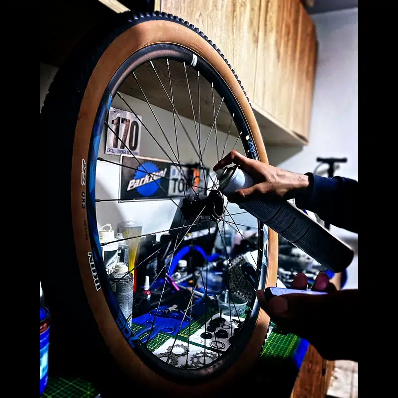
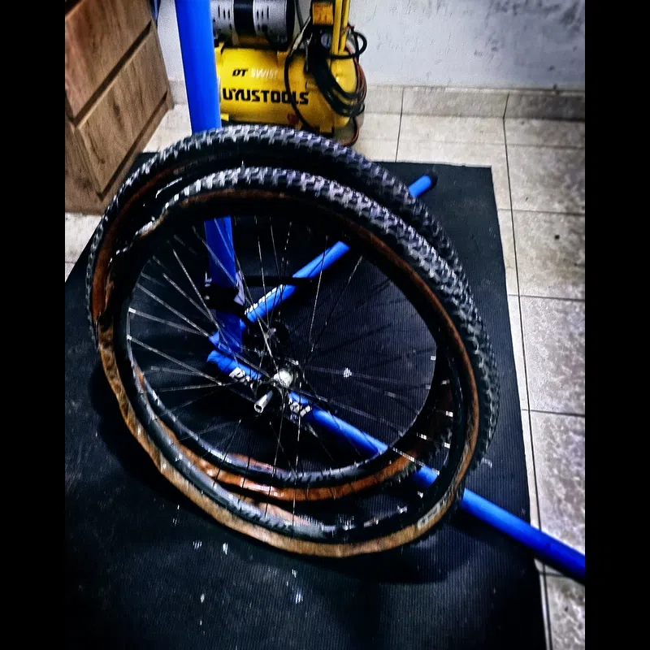
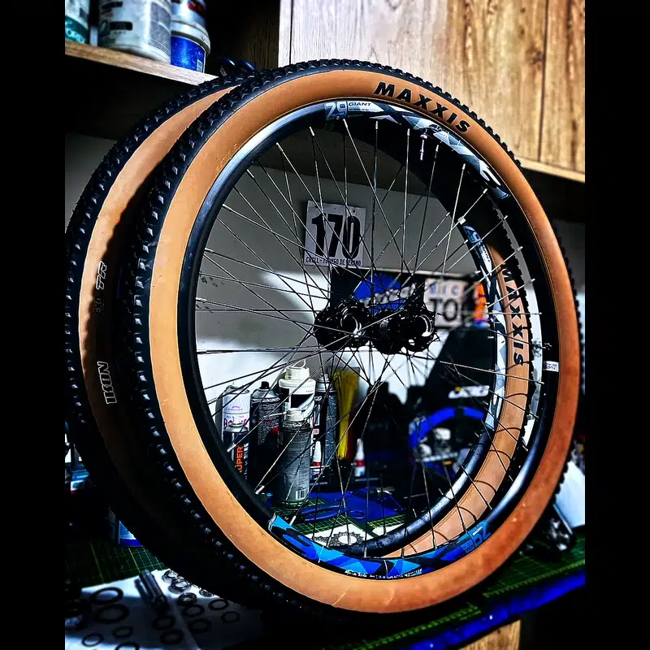

La pregunta llega casi todas las semanas al taller. A veces la hace el ciclista de ruta que quiere pasar de 25mm a 28mm pero tiene miedo de "perder velocidad". A veces la hace el que compró una bicicleta nueva con llantas de 28mm y está convencido de que debería cambiarlas por 25mm "para ir más rápido". Y a veces — con toda honestidad — la hace alguien que acaba de gastarse una cantidad importante en neumáticos ultra delgados porque "en el ciclismo de ruta las llantas delgadas son más veloces".
La creencia es casi universal. Y está, en el asfalto real peruano, prácticamente siempre equivocada.
No es una opinión. Los datos de laboratorio de los últimos ocho años lo demuestran con suficiente claridad como para que no haya mucho margen de debate. Lo que sí requiere explicación es por qué la física dice lo contrario de lo que la intuición sugiere — y cuáles son las condiciones exactas en que la llanta delgada efectivamente gana.
Eso es lo que analizo aquí.
¿Son más rápidas las llantas delgadas? En el asfalto real, no. A igual presión, una llanta de 28 mm rueda igual o mejor que una de 23 mm, porque se deforma menos por vuelta y pierde menos energía por histéresis — los datos de laboratorio de los últimos años lo confirman. La delgada solo gana en casos muy específicos (pista perfecta, prioridad aerodinámica extrema). Para la mayoría —y más en el asfalto irregular peruano— una llanta un poco más ancha, a la presión correcta, es más rápida, más cómoda y con más agarre.
Antes de hablar de física, el contexto local importa. Porque el debate del ancho de llanta en Perú no es el mismo debate que en Europa o en EE.UU. — el mercado es diferente, las superficies son diferentes, y las marcas disponibles son diferentes.
El grupo Cheng Shin Rubber — que fabrica Maxxis y CST — controla estimado más del 40% del mercado total de reposición en Perú. No es un dato menor: significa que la mayoría de las llantas que ruedan en bicicletas peruanas, desde Lima hasta provincias, salen de la misma corporación taiwanesa.
Maxxis domina el segmento deportivo y MTB, siendo el modelo más buscado en MercadoLibre Perú. CST y Kenda lideran en volumen masivo y provincias, equipando la mayoría de bicicletas urbanas y de transporte. Continental GP5000 es la referencia en ruta de alto rendimiento en Lima — nicho, pero presente. Schwalbe existe en el segmento gravel/MTB premium, pero su precio lo hace inaccesible para la mayoría del mercado.
El e-commerce chileno es significativamente más maduro. Schwalbe y Continental tienen presencia real en el mercado masivo, no solo en el segmento premium. MTB lidera el volumen total.
La tradición nacional en ciclismo de ruta hace que Vittoria tenga una presencia real que en otros países latinoamericanos no existe. Gran volumen en tiendas locales.
Las restricciones de importación afectan el stock de marcas internacionales. Imperial Cord, fabricante local, tiene participación significativa que en otros países no existe. MercadoLibre es el canal dominante.
¿Por qué importa esto? Porque la pregunta "¿qué llanta es mejor?" no puede responderse sin saber qué está disponible, a qué precio, y para qué tipo de rodadura. Un ciclista en Trujillo que pedalea asfalto costero en una ruta plana tiene un problema tribológico diferente al de alguien que sube a la sierra en gravel.
El Coeficiente de Resistencia al Rodamiento (CRR) es la variable que define cuánta energía consume una llanta por unidad de distancia recorrida. Se puede convertir directamente a vatios perdidos mediante la ecuación:
El mecanismo físico detrás del CRR es la histéresis del material: cuando la carcasa de la llanta se deforma al entrar en contacto con la superficie, absorbe energía. Al recuperar su forma, no devuelve toda esa energía — parte se disipa como calor. Esa energía disipada es la resistencia al rodamiento.
Aquí entra la física que contradice la intuición popular: una llanta más ancha, a la misma carga, se deforma de manera diferente que una delgada. La deformación es más ancha pero más corta. La llanta delgada tiene una deformación larga y estrecha que implica mayor curvatura y mayor ciclo de deformación por vuelta. Más ciclos de deformación por kilómetro = más pérdida por histéresis.
"Las llantas delgadas tienen menos contacto con el suelo, por eso ruedan más rápido y con menos resistencia."
El área de contacto total entre llanta y suelo depende casi exclusivamente de la carga y la presión — no del ancho. Si la carga es de 50 kg y la presión es de 80 psi, el área de contacto es prácticamente la misma en un neumático de 25mm o 32mm. Lo que cambia es la forma: estrecha y larga vs. corta y ancha. La forma corta-ancha implica menor deformación de la carcasa por vuelta y por tanto menor pérdida por histéresis. [Jan Heine, Bicycle Quarterly / Josh Poertner, Silca]
Bicycle Rolling Resistance (BRR) es el laboratorio de referencia independiente para neumáticos de bicicleta. Su metodología estandarizada mide vatios perdidos por resistencia al rodamiento a 29 km/h, con una carga de 42.5 kg por neumático, ajustando la presión de prueba según el ancho real medido de cada llanta — no una presión fija arbitraria.
Los siguientes datos son mediciones reales, publicadas, citables. No son estimaciones ni proyecciones.
| Modelo (mismo compuesto) | Ancho medido | Presión de prueba | Vatios (Crr) | Ranking |
|---|---|---|---|---|
| Continental GP5000 (clincher) | 25mm (especificado) | 80 psi / 5.5 bar | 12.1 W (CRR: 0.00363) | Referencia |
| Continental GP5000 S TR | 25mm | ~80 psi ajustado | 10.1 W | Mejora tubeless |
| Continental GP5000 S TR | 28mm | ~72 psi ajustado | 9.7 W | MÁS RÁPIDO QUE 25mm |
| Continental GP5000 S TR | 30mm | ~67 psi ajustado | 10.0 W | Casi igual que 28mm |
| Continental GP5000 S TR | 32mm | ~60 psi ajustado | 12.8 W | Incremento notable |
| Continental GP5000 TT TR | 28mm | ~72 psi ajustado | 8.3 W | Top 5 ruta mundial |
| Vittoria Corsa Pro Speed TLR | 28mm | ~72 psi ajustado | 6.7 W | Más rápido del mundo (lab) |
El dato que destruye el mito está en la tercera fila: el GP5000 S TR en 28mm mide 9.7 W — 0.4 vatios menos que el mismo modelo en 25mm. Mismo compuesto, mismo fabricante, misma tecnología. El único cambio es el ancho. Y el más ancho es más eficiente.
CONTEXTO_IMPORTANTE:
BRR ajusta la presión de prueba según el ancho real de cada llanta — no prueba todos los neumáticos a la misma presión. Esto replica lo que debería hacer cualquier ciclista: ajustar la presión según el ancho. El resultado es una comparación "en condiciones iguales de uso real", no una comparación donde se pondrían los 28mm a la misma presión que los 23mm. Ese detalle metodológico es fundamental para interpretar correctamente los datos.
Los datos de laboratorio de BRR son sobre superficie lisa. El asfalto real — el de la Panamericana Norte, el de las carreteras de acceso a la sierra, el de cualquier avenida de Trujillo — no es liso.
En 2017, Josh Poertner (CEO de Silca, ex-Director Técnico de Zipp) presentó un concepto que cambió fundamentalmente la forma en que la industria piensa sobre presión de neumáticos: las pérdidas por impedancia (suspension losses o impedance losses).
La mecánica es esta: cuando un neumático pasa sobre una irregularidad del asfalto — una grieta, un agregado de árido, un micro-bache — tiene dos opciones. O absorbe la irregularidad deformándose (si la presión lo permite), o transmite el impulso verticalmente al ciclista, elevando la masa combinada del sistema. Ese impulso vertical es energía que no regresa como propulsión. Se disipa. Son vatios perdidos que no aparecen en ningún medidor de potencia porque ocurren en la interfaz neumático-suelo, antes de llegar a los pedales.
Poertner cuantificó estas pérdidas en superficie de chip-seal (similar al asfalto rugoso de carreteras secundarias peruanas): con presión excesiva, las pérdidas por impedancia pueden superar los 20–30 vatios. No es una cifra marginal — es más de lo que pierde la mayoría de ciclistas por resistencia aerodinámica a velocidades menores de 35 km/h.
| Escenario | Neumático | Presión | P_rr (lab) | P_impedancia (asfalto real) | P_total estimada |
|---|---|---|---|---|---|
| Pista de madera perfecta | 23mm clincher | 110 psi | ~8 W | ~0 W | ~8 W |
| Asfalto rugoso (carretera real) | 23mm clincher | 110 psi | ~8 W | 15–25 W | 23–33 W |
| Asfalto rugoso (carretera real) | 28mm tubeless | 72 psi | ~9.7 W | 3–8 W | 12–18 W |
| Asfalto rugoso (carretera real) | 32mm tubeless | 60 psi | ~12.8 W | 1–4 W | 13–17 W |
El número que importa no está en la columna de P_rr. Está en la columna de P_total. En carretera real, el 28mm tubeless a presión correcta es entre 5 y 15 vatios más eficiente que el 23mm inflado a presión alta. En un ciclista que produce 200W, esa diferencia representa entre el 2.5% y el 7.5% de la potencia total. Es la diferencia entre ruedas que se pagan solas en rendimiento y ruedas que son puro marketing.
DATO_DE_TALLER:
El ciclista de ruta peruano promedio que llega aquí sube la presión de sus llantas de 25mm hasta 110-120 psi porque "así van más rápido". En la Panamericana Norte, que tiene micro-fisuras, agregados de árido en la carpeta asfáltica y juntas de expansión cada cierta distancia, esa llanta está perdiendo entre 15 y 20 vatios adicionales en impedancia pura. Cuando ajusto la presión al rango correcto (85–90 psi para 25mm, rider de 70 kg) la bicicleta "se siente diferente". Algunos lo describen como que "va más suave". Lo que realmente pasa es que está gastando menos energía en rebotar y más en avanzar.

Jan Heine de Bicycle Quarterly desarrolló y popularizó el concepto del Tire Drop: la deformación vertical óptima de un neumático bajo carga. Su investigación establece que el 15% del diámetro exterior del neumático como deformación vertical es el punto óptimo de operación — el rango donde la histéresis de la carcasa es mínima sin que la presión sea tan baja que cause pérdida de rigidez lateral y aumento de deformación ineficiente.
Frank Berto tradujo ese concepto en una fórmula práctica que Silca y otros fabricantes han refinado computacionalmente:
Lo importante de esta fórmula no es el resultado numérico exacto — eso lo calculan mejor las herramientas digitales de Silca. Lo importante es entender las variables: la presión óptima sube con la carga y baja con el ancho. Un ciclista más pesado necesita más presión. Una llanta más ancha necesita menos presión para alcanzar el mismo 15% de Tire Drop.
| Peso sistema (rider + bici) | Ancho llanta | Presión neumática rueda trasera (estimada) | Presión neumática rueda delantera (estimada) | Superficie recomendada |
|---|---|---|---|---|
| 65 kg | 25mm | 78–85 psi | 68–75 psi | Asfalto fino a moderado |
| 75 kg | 25mm | 88–95 psi | 76–82 psi | Asfalto fino a moderado |
| 75 kg | 28mm | 70–78 psi | 60–68 psi | Asfalto moderado a rugoso |
| 85 kg | 28mm | 80–88 psi | 69–76 psi | Asfalto moderado a rugoso |
| 75 kg | 32mm | 55–62 psi | 47–54 psi | Gravel fino / asfalto rugoso |
| 80 kg | 29×2.25" MTB | 22–26 psi (tubeless) | 18–22 psi (tubeless) | Tierra / grava / trail |
EL_ERROR_MÁS_COMÚN_EN_PERÚ:
El 90% de los ciclistas de ruta peruanos que llegan al taller tienen sus llantas infladas entre 15 y 30 psi por encima de la presión óptima. La lógica es "más presión = más duro = más rápido". Es exactamente al revés en asfalto real con irregularidades. Más presión de lo óptimo = más rebote = más pérdidas por impedancia = más lento, más incómodo, y mayor riesgo de pinchazos por impacto (snake bite en llantas con cámara). La presión máxima impresa en el flanco de la llanta es un límite estructural de seguridad — no una recomendación de uso.
Hay una condición específica donde el ancho de la llanta sí afecta negativamente el rendimiento, y no tiene nada que ver con el rodamiento: la aerodinámica.
Josh Poertner formuló la regla del 105% durante su etapa como Director Técnico en Zipp Speed Weaponry, originada en pruebas de túnel de viento realizadas entre 2001 y 2002, consolidada con el lanzamiento del modelo Zipp 808 en 2004. La regla establece:
El ancho exterior del aro de la rueda debe ser al menos el 105% del ancho real medido del neumático montado. Si el neumático es más ancho que el aro, el flujo de aire se desprende al salir del neumático, crea turbulencia y aumenta el arrastre aerodinámico (drag). Si el aro es al menos 5% más ancho que el neumático, el flujo se readhiere a la llanta de forma laminar.
Esto tiene una consecuencia directa en el mercado actual: la mayoría de aros modernos de ruta miden entre 25mm y 30mm de ancho exterior. En esos aros, una llanta de 25mm real (que generalmente mide 26–27mm montada) está en el límite o por debajo del umbral. Una llanta de 28mm real (que generalmente mide 29–30mm montada) puede estar en la zona de turbulencia si el aro mide menos de 29mm de ancho exterior.
| Ancho aro exterior | Ancho llanta montada máximo (regla 105%) | Llanta óptima (sin penalización aero) |
|---|---|---|
| 21mm (aro estrecho clásico) | 20mm real | 23mm ya penaliza aerodinámicamente |
| 25mm (aro moderno medio) | 23.8mm real | 25mm en el límite / 28mm penaliza |
| 28mm (aro ancho moderno) | 26.7mm real | 28mm correcta / 25mm puede generar turbulencia inversa |
| 32mm (aro endurance / gravel road) | 30.5mm real | 28–30mm correctas |
La conclusión aerodinámicamente correcta es contraintuitiva: en aros modernos de 25–30mm, usar una llanta de 25mm puede ser aerodinámicamente más lento que usar una de 28mm, porque el aro no es suficientemente ancho para el neumático de 25mm montado pero sí para el de 28mm. El sistema llanta + neumático importa más que cada componente por separado.
No todo es relativo. Hay condiciones específicas donde el neumático más delgado efectivamente tiene ventaja. Ser honesto sobre cuándo aplica el mito y cuándo no es parte del análisis.
| Condición | ¿El delgado gana? | Por qué | Relevancia para Perú |
|---|---|---|---|
| Pista de madera (velódromo) | SÍ, claramente | Superficie perfecta elimina impedance loss. Solo importa CRR puro y aerodinámica. | Nula (no hay velodromo de competición activo en el país) |
| Asfalto nuevo perfectamente liso | SÍ, ligeramente | Impedance loss casi cero. CRR y aero dominan. La diferencia es pequeña. | Limitada (pocos tramos de asfalto nuevo perfectamente liso) |
| Contrarreloj a >40 km/h (CRI) | DEPENDE del aro | A alta velocidad, la aerodinámica domina. Pero solo si el sistema aro+neumático cumple la regla del 105%. | Baja (pocos eventos de CRI al nivel de equipo) |
| Carretera real peruana típica | NO | Impedance loss supera ventaja de CRR. El 28mm a presión correcta gana. | Alta relevancia — es la condición habitual |
| Asfalto rugoso / chip-seal | NO, en ninguna condición | Impedance loss masivo. El delgado a alta presión puede perder 15–25W extra. | Muy alta (carreteras interurbanas peruanas) |
| Gravel / tierra / afirmado | NO | Ni cuestionable. El volumen de aire absorbe impactos y reduce pérdida total. | Muy alta (acceso a zonas andinas) |

Sin importar la marca — porque la marca disponible en Perú define en gran medida lo que es accesible — la combinación óptima se define por el tipo de uso. Aquí está el mapa de lo que funciona en la realidad local:
| Perfil de uso | Ancho óptimo | Presión orientativa (75 kg) | Tipo de llanta | Nota |
|---|---|---|---|---|
| Ruta costera (Lima-Trujillo, asfalto mixto) | 28mm | 70–78 psi trasera / 62–70 psi delantera | Tubeless o clincher de calidad | Equilibrio óptimo CRR + impedance |
| Ruta montaña / acceso sierra | 28–32mm | 65–72 psi / 56–63 psi | Tubeless preferido | Asfalto irregular. Más volumen = menos pérdida |
| Urbano / commuting Trujillo | 32–38mm | 50–60 psi / 45–55 psi | Clincher con cámara o tubeless | Calles con baches. El volumen protege la llanta y las llantas. |
| Gravel / afirmado andino | 40–50mm | 28–38 psi / 24–32 psi | Tubeless obligatorio | Sin tubeless, los pinchazos son inevitables |
| MTB XC / trail | 2.2"–2.4" | 22–26 psi / 18–22 psi | Tubeless obligatorio | Maxxis Ikon/Rekon disponible en Perú |
| Competición ruta (criterium / crono) | 25–28mm (según aro) | Calcular con regla 105% | Tubeless TLR o tubular | Aquí sí importa verificar compatibilidad aro-llanta |
NOTA_SOBRE_MARCAS_EN_PERÚ:
Maxxis (disponible) tiene llantas de ruta que ruedan correctamente en estos anchos. CST tiene opciones decentes para urbano y trekking. Para ruta de rendimiento, Continental GP5000 llega al mercado peruano aunque con precio significativo. Schwalbe llega en el segmento gravel/MTB premium. La recomendación de ancho aplica independientemente de la marca — lo que cambia entre marcas es el CRR base y la durabilidad, no la física del ancho. Un Maxxis de 28mm bien inflado va a superar en el mundo real a un Continental de 23mm sobre-inflado, sin importar cuánto cueste cada uno.
La física es una cosa. Lo que rueda en las pistas de tierra compacta alrededor de Trujillo es otra. He probado suficientes combinaciones como para tener una opinión propia sobre qué funciona aquí — y los datos de laboratorio la respaldan o la contradicen. Aquí está el inventario honesto.
El XC en Trujillo no es técnicamente exigente. No hay raíces, no hay barro, no hay secciones de roca que requieran tracción extrema. Lo que hay es tierra compacta, algo de polvo suelto encima, y velocidad. Eso define qué llanta tiene sentido aquí.
| Llanta | Medida | Peso especificado | Peso medido real | Vatios BRR (25 psi) | Evaluación en Trujillo |
|---|---|---|---|---|---|
| Schwalbe Racing Ralph Super Ground Addix Speed |
29×2.25 | ~560–590 g | ~610–650 g (muestra real) | 19.0 W | Referencia trasera. Rápida, rodadura eficiente en tierra compacta. |
| Schwalbe Racing Ray Super Ground Addix SpeedGrip |
29×2.25 | ~625 g | ~660–680 g (muestra real) | 20.4 W | Delantera natural del Racing Ralph. SpeedGrip da más mordida lateral sin sacrificar demasiado. |
| Maxxis Ikon 3C MaxxSpeed EXO TR |
29×2.20 | 640 g | ~659 g (medido) | ~22–24 W | Correcta. Más consistente en peso que Schwalbe. Rolls un poco más lento pero muy fiable. |
| Maxxis Ardent Race 3C EXO TR |
29×2.20 29×2.35 |
720 g / 745 g | ~759 g / ~780 g (medido) | ~27–29 W | Puente entre XC y trail. Más volumen que el Ikon, más tracción lateral, pero paga ~40% más resistencia vs Racing Ralph. |
| Continental Race King Protection |
29×2.20 | ~575–600 g | ~620 g | 18.2 W | Rápida y ligera. Buena para trasera en XC seco. Esquiva en curvas sueltas — hay que conocerla. |
| Continental Cross King Protection |
29×2.20 29×2.35 |
~640–680 g | ~680–720 g | ~22–24 W | Más mordida lateral que Race King. Buena delantera para XC con algo más de variabilidad de superficie. |
| Specialized S-Works Fast Trak T5/T7 2BR |
29×2.20 29×2.35 |
570 g / ~610 g | 588 g / ~640 g | 28.0 W (2.2) / 30.5 W (2.35) | La mejor por peso en el grupo. 588 g medidos es ligera. Paga 4–5 W más vs Racing Ralph pero ese peso en rueda se siente. |
| Specialized S-Works Ground Control 2BR |
29×2.30 | 650 g | 686 g (medido) | 31.3 W | Penaliza. En Trujillo no hay terreno que justifique esos 31 W y ese peso. Para trail técnico, correcto — para XC seco local, no. |
| Pirelli Scorpion XC variants |
29×2.20–2.40 | ~580–640 g | Variable | ~19–22 W (versiones RC) | Buena opción donde está disponible. Rendimiento cercano al Racing Ralph en versiones Race. No hay diferencias críticas vs Schwalbe en condiciones locales. |
| Chaoyang MTB (varias líneas) |
29×2.10–2.35 | ~650–800 g | Variable | ~28–35 W (estimado) | Opción de mercado masivo. Accesibles en Perú. Funcionan — pero los datos de rodadura no compiten con Racing Ralph o Race King. |
Con todos los datos encima de la mesa, el ejercicio matemático que importa no es elegir la llanta más rápida en laboratorio — es elegir la combinación delantera/trasera que optimiza el sistema completo para las condiciones reales de uso.
En XC Trujillo el terreno es tierra compacta seca, sin técnica extrema, con velocidad como variable principal. La función a optimizar es: mínimo CRR total + mínimo peso rotante + tracción suficiente para no perder tiempo en cambios de dirección.
| Combinación | Delantera | Trasera | Peso total par | P_rr total estimada | Disponible en Perú | Veredicto |
|---|---|---|---|---|---|---|
| Setup A — Referencia mundial XC | Racing Ray 2.25 ~660 g |
Racing Ralph 2.25 ~620 g |
~1,280 g | ~39 W | Difícil en provincias | Óptimo técnico. El benchmark mundial XC. |
| Setup B — Mi preferencia actual | S-Works Fast Trak 2.35 ~640 g |
Continental Race King 2.20 ~620 g |
~1,260 g | ~46 W | Parcialmente disponible Lima | La Fast Trak delantera da mordida y volumen. La Race King trasera es la más rápida del grupo. Sistema ligero y equilibrado para Trujillo. |
| Setup C — Continental puro | Cross King 2.35 ~700 g |
Race King 2.20 ~620 g |
~1,320 g | ~40–42 W | Parcialmente disponible | Sólido. Cross King da tracción delantera real, Race King atrás hace el trabajo. Peso manejable. |
| Setup D — Maxxis disponible en Perú | Ikon 2.35 ~743 g |
Ikon 2.20 ~659 g |
~1,402 g | ~46–50 W | Disponible Lima y provincias | Opción real de mercado local. No es el más rápido pero es el más accesible. Funciona. |
| Setup E — Evitar en XC Trujillo | Ground Control 2.35 ~686 g |
Ardent Race 2.35 ~780 g |
~1,466 g | ~58–62 W | Parcialmente disponible | Demasiado peso, demasiada resistencia para XC seco. Para trail técnico húmedo, correcto. Para Trujillo, no. |
En ruta de asfalto la diferencia entre tubeless y cámara es real pero moderada — principalmente en CRR y riesgo de pinchazo. En MTB sobre tierra y trocha la diferencia es de otra magnitud. No es una cuestión de rendimiento marginal. Es la diferencia entre poder bajar la presión a rangos funcionales o no poder hacerlo.
Con cámara en MTB, bajar de 28–30 psi en trasera expone a pinchazos de pellizco (snake bite) en cualquier impacto contra piedra o raíz. Con tubeless, el rango funcional baja a 18–22 psi en trasera y 16–20 psi en delantera. Esa diferencia de presión tiene un efecto directo y medible en tracción, confort, y pérdidas por impedancia.
| Parámetro | Con cámara | Tubeless | Diferencia práctica en XC |
|---|---|---|---|
| Presión mínima funcional (trasera) | 28–32 psi | 18–22 psi | 10 psi menos = mayor huella, mejor tracción en curva |
| Peso adicional por cámara | +100–130 g por rueda | +60–80 g sellante | ~50–80 g menos en perímetro de rueda. Se siente en aceleraciones. |
| Pinchazos lentos (gotas) | Pinchazo = parada | Sellante cierra solo en <30 seg | En carrera o salida larga, diferencia crítica |
| Costo de instalación | Bajo | Más alto (sellante + válvulas) | Inversión inicial, pero amortiza en llantas salvadas |
| Pérdidas por impedancia a igual presión | Cámara agrega histéresis interna | Sin cámara = sistema más eficiente | ~1–2 W por rueda en laboratorio. En trocha, más. |
DATO_DE_TALLER:
En Trujillo el tubeless no es común fuera del segmento más activo. La mayoría de bicicletas MTB que entran al taller tienen cámara butyl estándar inflada a 35–40 psi "por si acaso". Esa presión, sobre tierra compacta local, genera pérdidas de impedancia innecesarias y reduce la huella de tracción justo donde más se necesita — en curvas con polvo suelto encima de tierra dura. La conversión a tubeless en una rueda MTB cuesta en Perú entre S/. 40–80 adicionales por rueda (sellante + válvulas). En términos de rendimiento por sol invertido, es probablemente la modificación de mejor relación costo-beneficio disponible en el mercado local.
La percepción de que "en las ruedas se nota más la ligereza" no es psicológica. Tiene base física concreta.
El momento de inercia rotacional de una rueda aumenta con el cuadrado de la distancia al eje. La masa ubicada en el perímetro de la llanta — los knobs, la carcasa, el sellante — está a máxima distancia del eje y por tanto tiene el mayor efecto de inercia rotacional posible. Para acelerar ese masa rotante se requiere energía adicional proporcional a I·α, donde I es el momento de inercia y α es la aceleración angular.
La diferencia entre la S-Works Fast Trak (588 g medida) y el Ardent Race 2.35 (~780 g medido) es 192 gramos por llanta. En un par de ruedas: 384 gramos extra de masa rotante. En un criterium o en un XC con múltiples aceleraciones por vuelta, eso no es marginal. La física lo confirma y cualquier ciclista que haya hecho el cambio lo ha sentido.
| Llanta | Peso medido | Energía cinética rotante adicional vs Fast Trak (a 30 km/h) |
Equivalente vatios extra en sprint de 10 seg |
|---|---|---|---|
| S-Works Fast Trak 2.20 | 588 g | — (referencia) | — (referencia) |
| Continental Race King 2.20 | ~620 g | +0.15 J | ~+1.5 W equivalente |
| Maxxis Ikon 2.20 | ~659 g | +0.33 J | ~+3.3 W equivalente |
| Maxxis Ardent Race 2.35 | ~780 g | +0.90 J | ~+9 W equivalente |
| S-Works Ground Control 2.30 | 686 g | +0.46 J | ~+4.6 W equivalente |
El mito del neumático delgado tiene su origen en una condición de uso que prácticamente no existe en el ciclismo peruano real: la superficie perfectamente lisa. En velódromo, el 23mm a 120 psi es efectivamente más rápido. En la Panamericana Norte, en cualquier carretera de acceso a la sierra, en cualquier avenida de Trujillo, no lo es.
Los datos de laboratorio de BRR muestran que el GP5000 en 28mm es 0.4 vatios más eficiente que en 25mm bajo las mismas condiciones de uso normalizado. Los datos de Silca sobre impedance loss muestran que la diferencia en carretera real puede ser de 5 a 15 vatios adicionales a favor del 28mm. La regla del 105% muestra que en aros modernos, el 28mm puede ser también aerodinámicamente superior al 25mm.
El número que me parece más revelador de todos: el neumático más rápido del mundo en laboratorio, la Vittoria Corsa Pro Speed TLR, mide 28mm. No 23mm. No 25mm. 28mm.
Lo que funciona en condiciones reales peruanas:
Ruta costera asfalto mixto: 28mm tubeless o clincher de calidad, 70–78 psi trasera para rider de 75 kg. La mejora en impedance loss sobre el 25mm a 100+ psi es real y medible.
Presión correcta antes que ancho correcto: El error más frecuente no es usar el ancho equivocado — es usar la presión equivocada. Un 28mm inflado a 100 psi pierde las ventajas del volumen. Un 25mm a 85 psi va a ser mejor que el mismo a 115 psi en cualquier asfalto con irregularidades.
La regla del 105% como filtro de compra: Antes de decidir el ancho de la llanta, medir el ancho exterior del aro. El ancho óptimo de llanta montada no debe superar el 95% del ancho exterior del aro. En aros de 25mm exterior, la llanta ideal es de 25mm especificado o menos. En aros de 28mm exterior, el 28mm especificado es el óptimo.
El ciclista que infla sus llantas de 25mm a 120 psi porque "más duro es más rápido" está perdiendo entre 10 y 20 vatios en carreteras peruanas típicas. Con esos vatios podría pedalear entre 1.5 y 3 km/h más rápido a la misma potencia. Y no tiene que comprar nada nuevo para recuperarlos — solo tiene que inflar diferente.
La eficiencia de rodadura es una rama de la tribología aplicada que define el rendimiento en competencia.